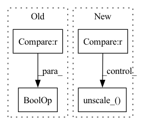

Pattern ID :5994

Before Change
train_loss = train_loss + l1_loss + ssim_loss * 50 + duration_loss * 4 + pitch_loss * 4 + energy_loss * 4
if step_counter > postnet_start_steps:
train_loss = train_loss + glow_loss
if step_counter > kl_start_steps and step_counter > encoder_pretraining_steps:
train_loss = train_loss + kl_loss * min(0.05 + 0.00001 * (step_counter - kl_start_steps),
0.2) // linear increase over 15k steps
After Change
del train_loss
step_counter += 1
scaler.unscale_(optimizer)
if step_counter > postnet_start_steps:
scaler.unscale_(optimizer_postflow)
torch.nn.utils.clip_grad_norm_(net.parameters(), 0.8, error_if_nonfinite=False)
scaler.step(optimizer)
if step_counter > postnet_start_steps:
scaler.step(optimizer_postflow)
In pattern: SUPERPATTERN
Frequency: 3
Non-data size: 4
Instances
Fragment ID: 20991691
Project Name: digitalphonetics/ims-toucan
Commit Name: 00201cac339db5bddb187d80f4d1526f57a281e8
Time: 2022-12-18
Author: lux.florian@gmail.com
File Name: TrainingInterfaces/Text_to_Spectrogram/PortaSpeech/portaspeech_train_loop.py
M Class Name: AnonimousClass
N Class Name: AnonimousClass
M Method Name: train_loop(17)
N Method Name: train_loop(18)
M Parent Class:
N Parent Class:
M File Name: TrainingInterfaces/Text_to_Spectrogram/PortaSpeech/portaspeech_train_loop.py
N File Name: TrainingInterfaces/Text_to_Spectrogram/PortaSpeech/portaspeech_train_loop.py
M Start Line: 51
M End Line: 232
N Start Line: 72
N End Line: 219
'>
Before Change
// Writer Loss to file
writer.add_scalar("Train/Loss", loss.item(), index + epoch * batches + 1)
if index % config.print_frequency == 0 and index != 0:
progress.display(index)
After Change
// enable preload
train_prefetcher.reset()
batch_data = train_prefetcher.next()
while batch_data is not None:
// measure data loading time
data_time.update(time.time() - end)
lr = batch_data["lr"].to(config.device, non_blocking=True)
hr = batch_data["hr"].to(config.device, non_blocking=True)
// Initialize the generator gradient
model.zero_grad()
// Mixed precision training
with amp.autocast():
sr = model(lr)
loss = pixel_criterion(sr, hr)
// Gradient zoom
scaler.scale(loss).backward()
scaler.unscale_(optimizer)
// Update generator weight
scaler.step(optimizer)
scaler.update()
'>
Fragment ID: 20991693
Project Name: lornatang/esrgan-pytorch
Commit Name: 087e0c9bc621989889918b52b7c0dba9485c5fd6
Time: 2022-03-06
Author: liuchangyu1111@gmail.com
File Name: train_rrdbnet.py
M Class Name: AnonimousClass
N Class Name: AnonimousClass
M Method Name: train(8)
N Method Name: train(8)
M Parent Class:
N Parent Class:
M File Name: train_rrdbnet.py
N File Name: train_rrdbnet.py
M Start Line: 165
M End Line: 200
N Start Line: 185
N End Line: 235
'>
Before Change
// Writer Loss to file
writer.add_scalar("Train/Loss", loss.item(), index + epoch * batches + 1)
if index % config.print_frequency == 0 and index != 0:
progress.display(index)
After Change
// enable preload
train_prefetcher.reset()
batch_data = train_prefetcher.next()
while batch_data is not None:
// measure data loading time
data_time.update(time.time() - end)
lr = batch_data["lr"].to(config.device, non_blocking=True)
hr = batch_data["hr"].to(config.device, non_blocking=True)
// Initialize the generator gradient
model.zero_grad()
// Mixed precision training
with amp.autocast():
sr = model(lr)
loss = pixel_criterion(sr, hr)
// Gradient zoom
scaler.scale(loss).backward()
scaler.unscale_(optimizer)
// Update generator weight
scaler.step(optimizer)
scaler.update()
'>
Fragment ID: 20991694
Project Name: lornatang/srgan-pytorch
Commit Name: 231bd74d21d7f532fd746f4a1cb8fb3bc008c933
Time: 2022-03-03
Author: liuchangyu1111@gmail.com
File Name: train_srresnet.py
M Class Name: AnonimousClass
N Class Name: AnonimousClass
M Method Name: train(8)
N Method Name: train(8)
M Parent Class:
N Parent Class:
M File Name: train_srresnet.py
N File Name: train_srresnet.py
M Start Line: 149
M End Line: 184
N Start Line: 174
N End Line: 224